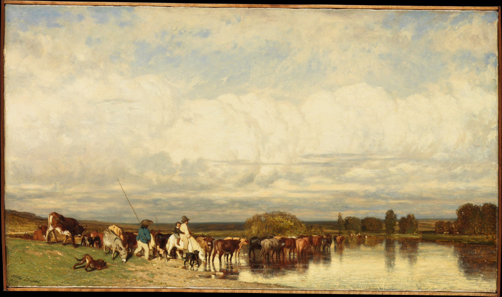

No. 04
처음 오시는 분께
따로 신청하실 것이 없습니다. 예배 시간에 오시면 됩니다.
주일 오전 11시 예배로 오시면 됩니다.
다른 예배·모임 시간은 예배 안내에 있습니다.
경기 광명시 기아로 23 (소하동) 4층.
자가용·대중교통 안내는 오시는 길에 있습니다.
카카오 오픈채팅으로 목사님과 바로 이야기하실 수 있습니다.
★이 페이지는 이름·연락처를 입력받지 않습니다. 개인정보를 한 글자도 받지 않습니다.